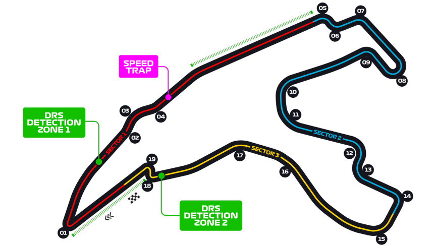

Grand Prix de Belgique
Informations
Nom du circuit
Circuit de Spa-Francorchamps
Lieu
Francorchamps (Belgique)
Nombre de tours
44
Longueur du circuit
7.004 km
Distance de course
308.052 km
Dernier vainqueur
Max Verstappen
Classement nombres de victoires sur ce circuit
6 victoires - Michael Schumacher
5 victoires - Ayrton Senna
4 victoires - James Clark
4 victoires - Kimi Raikkonen
4 victoires - Lewis Hamilton
Le saviez-vous ?
C'est un circuit historique créé en 1921 avec un tracé initial de presque 15 km ! Evidemment, le circuit a été raccourci et amélioré pour atteindre aujourd'hui 7 km tout de même.
Le circuit est surtout connu pour son fameux "Raidillon de l'Eau Rouge". C'est une véritable épreuve pour tous les pilotes concourants sur ce circuit. Il s'agit d'une succession de virages avec un dénivelé très élevé, qui ne permet que très peu de visibilité au pilote.
Malheureusement, ce tracé et particulièrement le Raidillon de l'Eau Rouge ont été le théâtre de moments terribles pour la discipline. Le dernier en date est l'accident mortel du jeune pilote français prometteur Antoine Hubert en Formule 2.